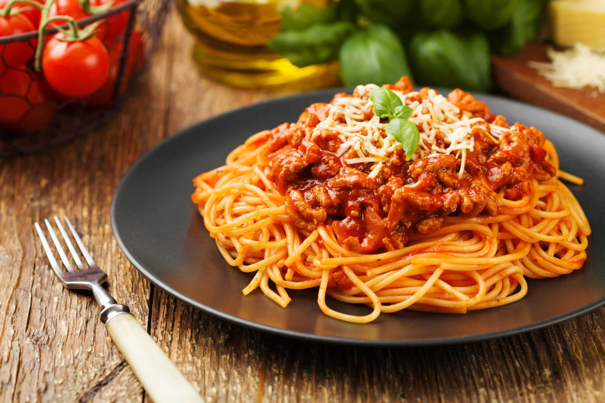

Easy Peasy Spaghetti

Just get home from a twelve hour shift and the thought of
cooking makes you want to drive your car off a bridge? Don't
worry, there is a meal you can make that isn't just a mediocre
frozen pizza that requires just as little effort.
Ingredients
- 500g Package of Dry Spaghetti Noodles
- 1lb Ground Beef
- 1 Medium Onion, Diced
- 5 White Mushrooms, Sliced
- 2 Garlic Cloves, Minced
- 28oz Prego Tomato Sauce
- 2tsp Dried Oregano
- 1tbsp Italian Seasoning
- 2tsp Garlic Powder
- Salt to taste
Steps
- In a large skillet, add ground beef and cook on medium-high heat until it is browned. Drain excess fat.
- Add onion, garlic, and 1tbsp of butter to the skillet, and cook until onions are translucent. Add the beef back into the skillet, add mushrooms, and stir.
- Transfer the skillet mixture into a large pot. Add the tomato sauce and spices to the pot.
- Bring the sauce to a simmer and then lower heat. Cook for 15 minutes, stirring often.
- While the sauce is cooking, add spaghetti noodles to salted, boiling water and cook them to al dente. stir often to prevent sticking.
- Drain noodles into a colander and rinse with cold water, separating any noodles that are stuck together.